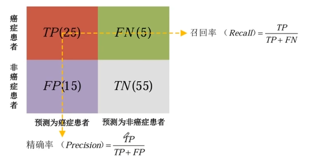

# 什么是模型评价指标
模型评价指标是用来定量评估机器学习模型性能的一套标准和度量方法。它们将模型的预测结果与真实情况进行比较，给出一个数值化的分数。
# 准确率
简单来说，准确率回答了一个核心问题：“在模型做出的所有判断中，有多少次是猜对的？”
在二分类问题中，我们通常使用混淆矩阵中的四个指标来定义准确率：
- TP (True Positive)：真正例，实际为正，模型也预测为正。
- TN (True Negative)：真负例，实际为负，模型也预测为负。
- FP (False Positive)：假正例，实际为负，模型却预测为正。
- FN (False Negative)：假负例，实际为正，模型却预测为负。
三分类及其以上的也是可以的，我们关注的就是整理，其他的就是反例。
# 混淆矩阵
混淆矩阵 就是一张 “对比表”。它把模型预测的结果和实际的真实情况排在一起，让你一眼看出模型在哪些地方混淆了，而它的样子取决于你有多少个类别。
无论是二分类还是多分类，混淆矩阵的结构通常如下：
- 行：代表样本的真实类别。
- 列：代表模型预测的类别。
- 对角线：从左上角到右下角的格子，代表预测正确的数量。
假设你有一个识别动物的模型，测试了 27 只动物，结果可能长这样：
| 预测：猫 | 预测：狗 | 预测：兔 | 总计（实际） | |
|---|---|---|---|---|
| 实际：猫 | 5 (TP) | 2 | 1 | 8 |
| 实际：狗 | 0 | 6 (TP) | 0 | 6 |
| 实际：兔 | 2 | 1 | 10 (TP) | 13 |
| 总计（预测） | 7 | 9 | 11 | 27 |
import seaborn as sns | |
from sklearn.metrics import confusion_matrix | |
y_true = [0]*8 + [1]*6 + [2]*13 | |
y_pred = ([0]*5 + [1]*2 + [2]*1) + ([1]*6) + ([0]*2 + [1]*1 + [2]*10) | |
print(f"实际标签: {y_true}") | |
print(f"预测结果: {y_pred}") | |
cm = confusion_matrix(y_true, y_pred) | |
sns.heatmap(cm, annot=True, fmt='d', cmap='Blues') |

# 精确率 / 查准率
它的核心问题在于，模型说 “是” 的时候，它有多可信？
# 召回率 / 查全率
它关注的是模型发现正例的能力，或者说覆盖率。
# 精确率与召回率的进一步理解
假设一个小镇上有 10 个坏人 和 90 个好人。
# 策略一：极端谨慎，没把握绝不动手
在这个场景下，警察非常担心冤枉好人。他们只在掌握了百分之百证据的情况下才抓人。
结果：警察只抓了 1 个人，而这个人确实是坏人。
- 精确率：。因为抓的人里没有一个是冤枉的。
- 召回率：。虽然抓得准，但剩下的 9 个坏人还在外面逍遥法外。
“虽然从不冤枉好人，但办事效率太低，坏人都漏掉了。”
# 策略二：宁可错杀一千，不可放过一个
在这个场景下，警察为了彻底肃清坏人，决定把所有有嫌疑的人全部抓起来。
结果：警察抓了 50 个人。其中包含了全部 10 个坏人，但也误抓了 40 个好人。
- 召回率：。所有的坏人都被抓进了监狱，一个没漏。
- 精确率：。虽然坏人抓完了，但抓的人里有 80% 都是冤枉的好人。
“虽然坏人一个没跑，但滥杀无辜，造成了大量的误报。”
# 精确率与召回率的相互制衡
| 维度 | 精确率高 / 召回率低 | 精确率低 / 召回率高 |
|---|---|---|
| 核心逻辑 | 追求 “真”，怕误报 | 追求 “全”，怕漏报 |
| 模型表现 | 表现得非常保守 | 表现得非常激进 |
| 反面后果 | 漏网之鱼太多 | 冤假错案太多 |
在模型调整中，当你调低阈值时，你抓到的坏人会变多，但随之而来的误伤也会变多。这就是机器学习中著名的 P-R 权衡。
P：Precision R：Recall
# F1-score 值
F1-Score 使用的是调和平均数，它的公式是：
调和平均数的特点： 它对 “极小值” 非常敏感。如果 Precision 或 Recall 其中一个非常低，整个 F1-Score 就会被拉得很低，取值范围是 0~1。
# IOU 交并比
IoU 衡量的是模型预测的边界框与真实的边界框之间的重叠程度。
# NMS 非极大值抑制
当你运行一个检测模型时，模型往往非常热心，会在同一个物体周围画出成百上千个重叠的候选框。NMS 的作用就是：在这一堆框里，只选出最准的那一个，把剩下的删掉。
- 排序：将所有候选框按置信度得分从高到低排序。
- 选中：挑选得分最高的框，把它作为最终结果保存。
- 比较与删除：计算剩下的所有框与 的 IoU。如果某个框与 的 超过了预设的阈值（比如 0.5），就认为这个框和 预测的是同一个物体，直接把它删掉。
- 循环：在剩下的框中继续找得分最高的，重复上述过程，直到处理完所有框。
为什么不找一个置信度最高的的一个框就完事了呢，那是因为，我们在一张图片里有好多要检测的目标，如果只选择最大的那就只保留了一个，这是不合理的。
这就是 NMS 算法设计的精妙之处：它不是简单的全场选最高，而是局部选最高。
# Confidence 置信度
：是一个概率值，取值范围在 之间。
- 如果框内包含物体的中心点，。
- 如果框内只有背景，没有任何物体中心点，。
：预测框与真实框之间的重叠程度。
# 特定类别得分
：这是条件类别概率，即在已经确定有物体的前提下，它是狗的概率。
最终得分：综合了有没有东西、框得准不准以及是什么东西这三个因素。
# PR 曲线
PR 曲线 是衡量分类模型性能的另一把尺。它展示了在不同的置信度阈值下，精确率 和 召回率 之间的博弈关系。
当我们使用模型预测时，通常会得到一个概率值。我们需要设定一个阈值来决定它是正还是负。
- 如果阈值设为 0.9 很严苛：只有极有把握的才算正例，精确率会很高，但会漏掉很多，召回率低。
- 如果阈值设为 0.1 很宽松：宁可错抓不可放过，召回率会很高，但误报也多，精确率低。
PR 曲线就是把阈值从 0 变到 1 的过程中，所有的 Recall 与 Precision 坐标点连成的线。
横轴是 Recall 召回率，纵轴是 Precision 精确率。它常是一条向右下方倾斜的曲线。当召回率上升时，精确率往往会下降。
理想位置：曲线越靠近右上角（1, 1）越好。这意味着模型能同时保持高精确率和高召回率。
# mAP
mAP: mean Average Precision
AP: Average Precision， AP 是 PR 曲线下方的面积。
m: mean
mAP 反映了模型的全能程度。如果一个模型只会认猫，不认识狗，那么它的 mAP 就会被拉低。mAP 是衡量模型好坏的终极标准。它不仅看模型能不能分类正确，还看模型框得准不准。
# FPS
在模型评价指标中，如果说 mAP 衡量的是模型聪不聪明，那么 FPS 衡量的就是模型快不快。FPS 即每秒传输帧数，是衡量模型推理速度的核心指标。